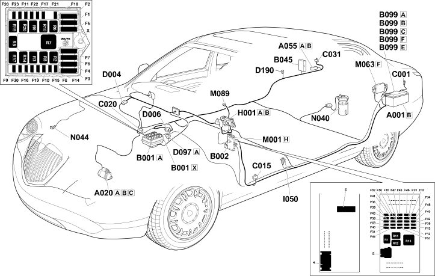

E1010 POWER SUPPLY LOCATION COMPONENTS
- Path
- Electrical equipment > ELECTRICAL FUNCTIONS > E10 POWER SUPPLY AND EARTHS > E1010 SUPPLY > E1010 POWER SUPPLY LOCATION COMPONENTS
- Kind
- topic
- Applies to
- engines: 2.4 JTD 20V; all production periods
- Interactive page
- https://sloeber94.github.io/elrnDB-lThss/en/#/841006286
Applies to: engines: 2.4 JTD 20V; all production periods
Location Components

Components
Component code | Name | Assembly reference |
|---|---|---|
Battery | 5505A | |
Starter motor | 5520B | |
Additional battery for parking control unit (NPB) | - | |
Engine compartment junction unit | 5505A | |
Junction unit under dashboard | 5505A | |
Luggage compartment junction unit (CVB) | - | |
Maxifuse box on battery | - | |
Battery earth | - | |
Driver's dashboard earth | - | |
Passenger dashboard earth | - | |
Right rear earth | - | |
D004 | Giunzione anteriore / motore | - |
Front/rear coupling | - | |
Short circuit coupling | - | |
Front/Webasto pump coupling | - | |
Ignition switch | - | |
Inertia switch | 1040A | |
Body computer | 5505A | |
Luggage compartment control unit (NVB) | - | |
Steering lock control unit (NBS) | - | |
Fuel pump and level gauge | 1040A | |
Additional heater electric pump | - |
Topics linked from this page (21)
- A001 Battery
- A020 Starter motor
- A055 Additional battery for parking control unit (NPB)
- B001 Engine compartment junction unit
- B002 Junction unit under dashboard
- B045 Luggage compartment junction unit (CVB)
- B099 Maxifuse box on battery
- C001 Battery earth
- C015 Driver's dashboard earth
- C020 Passenger dashboard earth
- C031 Right rear earth
- D006 Front/rear coupling
- D097 Short circuit coupling
- D190 Front/Webasto pump coupling
- H001 Ignition switch
- I050 Inertia switch
- M001 Body computer
- M063 Luggage compartment control unit (NVB)
- M089 Steering lock control unit (NBS)
- N040 Fuel pump and level gauge
- N044 Additional heater electric pump